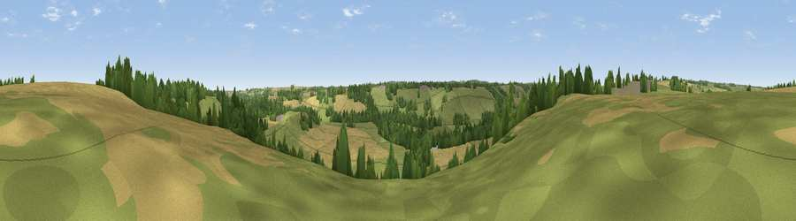

Viewpoint near Kearby
#42644 in England · top 88% of its area beats it · near Kearby · access?Where it is
The exact computed spot (SE 35125 46925). Click the marker for map links.
Public access: no public right of way or access land is recorded at this exact spot — it may be on private land. Computed from Natural England's CRoW access layer and OpenStreetMap rights of way — not the legal definitive map. Always verify locally.
The view, rendered

A 360° render of this exact spot computed from the terrain model, tree cover and land cover — summer colours, afternoon light, calibrated against photographs of famous viewpoints. Real trees, hedges and buildings will differ in detail.
The panorama
Grey silhouette: terrain skyline in each direction (720 bearings, Earth curvature and refraction included). Dashed green: skyline with trees (+15 m) and buildings (+8 m) as obstacles. Blue strip: how far the ground is visible on each bearing.
Where the view opens
Wedge length = distance to the farthest visible ground on that bearing (vegetation-aware). Rings at 10, 25 and 50 km.
What fills the view
53% grassland · 29% cropland · 18% woodland
Angular shares of the visible panorama (visual magnitude), not map area. Landscape diversity 0.45 (0–1 Shannon).
Key numbers
More beautiful places nearby
The staircase of upgrades: each row has a higher view potential than everything closer. Driving times are estimates from straight-line distance, calibrated against real road routing — check an actual route before setting out.
| Place | Direction | Drive | Score |
|---|---|---|---|
| Carston Hill | SE · 1 km | ~3 min | 34.3 |
| Viewpoint near East Keswick | S · 2 km | ~5 min | 43.0 |
| Viewpoint near Kirkby Overblow | NW · 2 km | ~6 min | 63.5 |
| Viewpoint near North Rigton | WNW · 9 km | ~17 min | 66.6 |
| Rawdon Trig point | WSW · 15 km | ~27 min | 69.6 |
| Rawdon Billing | WSW · 15 km | ~27 min | 72.7 |
| Viewpoint near Otley | W · 15 km | ~27 min | 77.5 |
| Hood Hill | NNE · 37 km | ~56 min | 79.6 |
53.91729, -1.46671 · source: screening · position refined by local search. Computed location — check access rights before visiting.